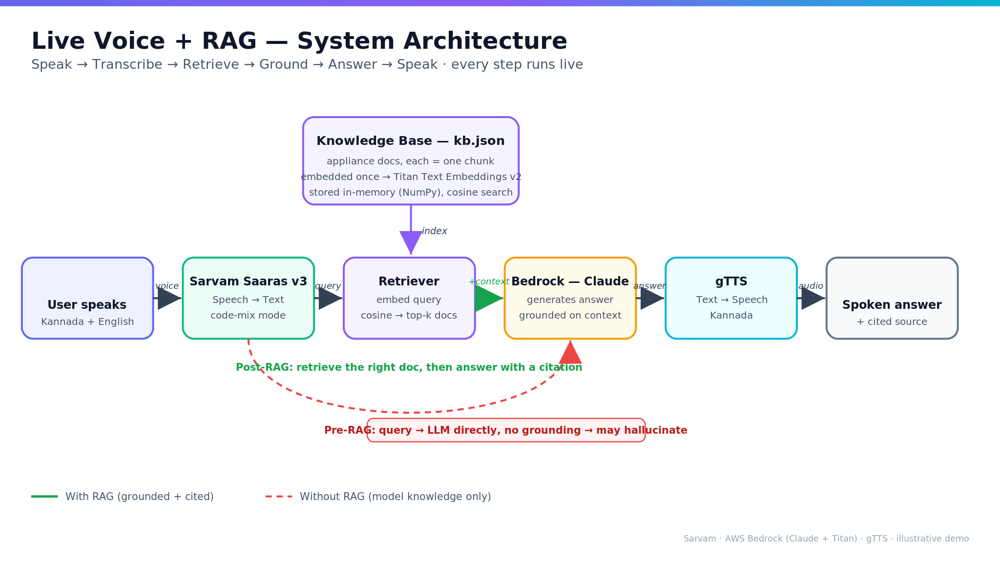
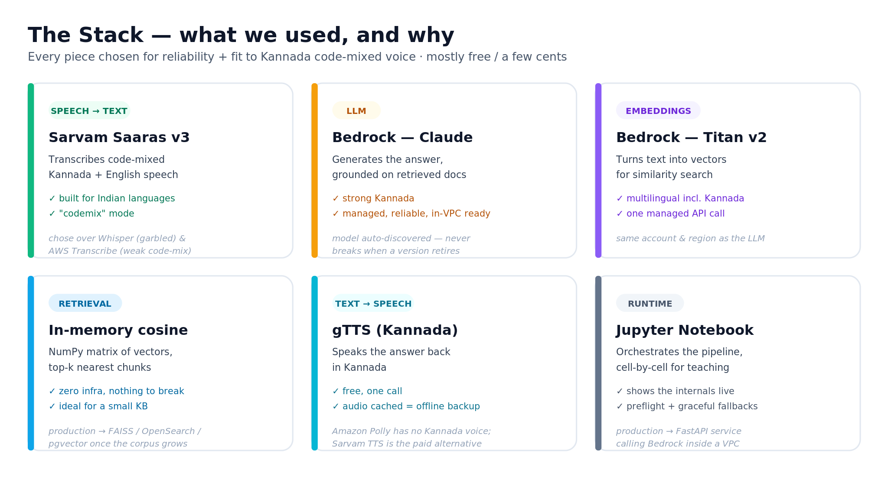
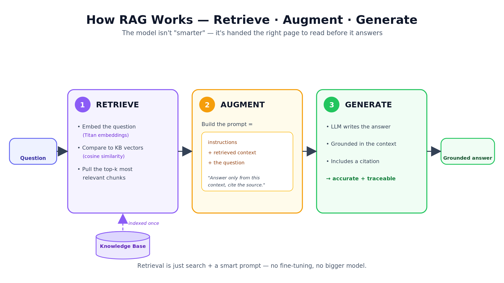
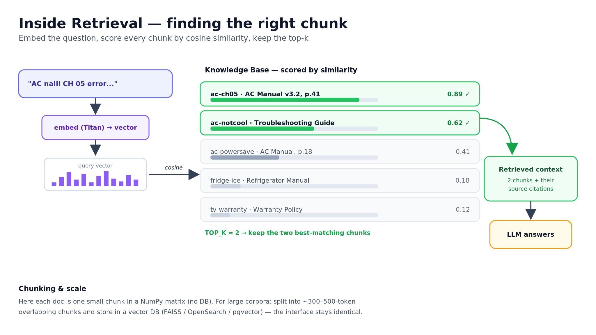
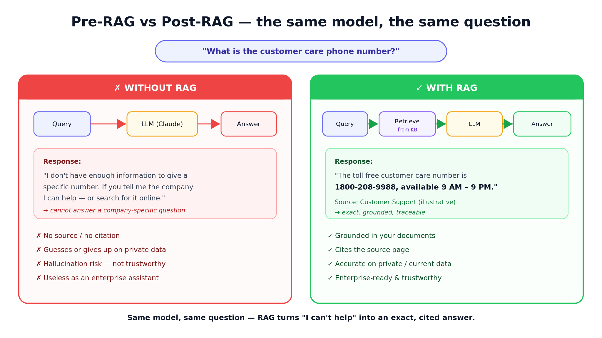

Large language models are impressive until someone speaks to them in mixed Kannada and English and asks a company-specific question. Then they either guess or give up. This is a walkthrough of a live voice agent I built that fixes exactly that — code-mixed speech in, a grounded, cited answer out — using Retrieval-Augmented Generation (RAG) on AWS Bedrock. Full code, architecture, and video below.
The whole project is open source: github.com/thakurarjun247/voice-rag. You can clone it, add your AWS and Sarvam keys, and run the same demo.
The 30-second version
- Problem: generic LLMs mishandle code-mixed regional voice, and they hallucinate on private or current data (a helpline number, a warranty period, an error code).
- Fix: transcribe the code-mixed speech properly, then use RAG to ground the answer in your own documents — with a source citation.
- Stack: Sarvam Saaras v3 (speech-to-text), AWS Bedrock — Claude (LLM) and Titan (embeddings), in-memory cosine retrieval, gTTS (speech-out). Mostly free tiers.
- Result: without RAG the assistant says "I don't have that"; with RAG it returns the exact answer and cites the source.
Why LLMs struggle with code-mixed regional voice
Two separate failures stack up when someone in Karnataka asks a real question like "Nanna washing machine nalli error code OE bandide, enu maadbeku?" ("My washing machine shows error code OE, what should I do?").
First, the speech is code-mixed — Kannada and English interleaved in one sentence. General multilingual speech-to-text models expect one language per utterance and garble the mix. In testing, OpenAI Whisper produced barely usable transcripts for spoken Kannada-English; it's simply not what it was trained for.
Second, the model hallucinates on facts it cannot know. Ask a plain LLM for a company's customer-care number and it will either refuse or invent a plausible-looking one. That is the core weakness RAG exists to solve — and it's the same lesson whether you're building in Kannada, Hindi, or English. (If you want the deeper version of this, I run a dedicated RAG training and voice AI development track.)
The architecture
The pipeline is a straight line with one branch. Speech becomes text, the text is used to retrieve the most relevant document, and the model answers from that document — then the answer is spoken back. The "without RAG" path (dashed) skips retrieval and goes straight to the model, which is where hallucination creeps in.

The stack — and what I rejected
Every component was chosen for reliability and fit to code-mixed Kannada, not novelty. The interesting decisions are the rejections.

- Speech-to-text: Sarvam Saaras v3, built for Indian languages with a
dedicated
codemixmode. Chosen over Whisper (garbled the Kannada-English mix) and Amazon Transcribe (weaker on intra-sentence code-switching, and gated on a new account). - LLM: AWS Bedrock — Claude. Strong Kannada, fully managed, and VPC-ready for enterprises. The notebook auto-discovers the current Claude model, so it never breaks when a model version is retired.
- Embeddings: AWS Bedrock — Titan Text Embeddings v2. Multilingual including Kannada, one managed API call, same account and region as the LLM.
- Retrieval: in-memory cosine similarity (NumPy). For a small knowledge base, a vector database is overkill and just one more thing to break.
- Text-to-speech: gTTS (Kannada). Amazon Polly has no Kannada voice, so gTTS is the pragmatic free option; Sarvam's TTS is the paid, higher-quality alternative.
How RAG works: retrieve, augment, generate
RAG doesn't make the model "smarter." It hands the model the right page to read before it answers. Three steps:

Retrieval itself is worth seeing concretely. The question is embedded into a vector, scored against every chunk in the knowledge base by cosine similarity, and the top matches are kept.

The crucial code
Two things do the work. First, the code-mixed transcription — note the codemix
mode and Kannada language code:
# Code-mixed Kannada + English speech -> text (Sarvam Saaras v3)
resp = requests.post(
"https://api.sarvam.ai/speech-to-text",
headers={"api-subscription-key": SARVAM_API_KEY},
files={"file": ("q.wav", audio, "audio/wav")},
data={"model": "saaras:v3", "mode": "codemix", "language_code": "kn-IN"},
)
transcript = resp.json()["transcript"]Then the retrieval-and-grounding step. This is the whole point: retrieve the nearest chunks, then instruct the model to answer only from that context and to cite the source.
# 1) RETRIEVE - find the most relevant chunks
def retrieve(query, k=2):
q = embed(query) # Titan embedding
sims = KB @ q / (norms * norm(q)) # cosine similarity
return top_k(sims, k) # nearest documents
# 2) AUGMENT + GENERATE - ground it, force a citation
prompt = f"""Answer ONLY from the context. Cite the source.
CONTEXT:
{context}
User: {query}"""
answer = llm(prompt) # grounded + citedThe full, runnable notebook — including live-mic capture, model auto-discovery, preflight checks, and graceful fallbacks — is on GitHub.
View the full code on GitHub →
See it live
The demo runs from a single Jupyter notebook. Starting it is two commands:
cd D:\git\voice-rag
jupyter notebook Voice_RAG_Demo.ipynbThen you speak a code-mixed question and watch the "without RAG" answer, then the "with RAG" answer. Two runs below.
Demo 1 — an appliance error code (AC "CH 05")
Spoken query: "Nanna Air conditioner nalli ch 05 error bandide, enu maadbeku?" Without RAG the model gives a generic "turn it off and on" answer; with RAG it grounds the fix in the manual and cites the page.
Demo 2 — a company-specific fact (customer care number)
Spoken query: "What is the customer care number?" This is the cleanest proof. Without RAG the model literally cannot answer — it has no way to know a specific helpline. With RAG it returns the exact number and cites the source document.
Pre-RAG vs post-RAG: the result
Same model, same question. The only difference is whether retrieval grounded the answer.

When RAG helps — and when it doesn't
An honest point that too many RAG demos skip: on public facts the model already knows — like what a common washing-machine error code means — RAG adds little, because the base model was already roughly right. Modern models like Claude know a lot of general troubleshooting.
RAG becomes decisive on private, current, or specific data: your helpline number, your warranty terms, your internal policy, this week's pricing. There the model has to invent or refuse — and RAG replaces the guess with a grounded, cited fact. Two things it always adds, even when the model was already right: a source citation and far lower hallucination risk. For an enterprise assistant, that traceability is the difference between a demo and something you can actually trust.
Cost, reliability, and production
The whole demo runs on free tiers and a few cents of Bedrock usage, with no idle infrastructure. Reliability came from small, boring choices: a preflight cell that fails fast with a checklist, model auto-discovery so a retired model ID can't break the run, cached audio, and typed-query fallbacks if the mic or a network call misbehaves.
To productionize, the pipeline barely changes shape: chunk larger documents and move retrieval into a vector database (FAISS, OpenSearch, or pgvector), wrap it in a FastAPI service calling Bedrock inside your VPC so data never leaves your account, and add guardrails, evaluation metrics, and monitoring. The retrieval interface stays identical — you just swap the store.
Takeaways
LLM plus RAG gives you answers that are accurate, grounded, in-language, and cited — and it works in the hardest setting, regional code-mixed voice. The win is not a bigger model; it's retrieval plus traceability. The exact same pattern powers any enterprise knowledge assistant, in any language.
I build and teach production voice and RAG systems like this. If your team wants it built or wants to learn it hands-on, see RAG training, voice AI development, or just reach out on the contact page. The full code is on GitHub.